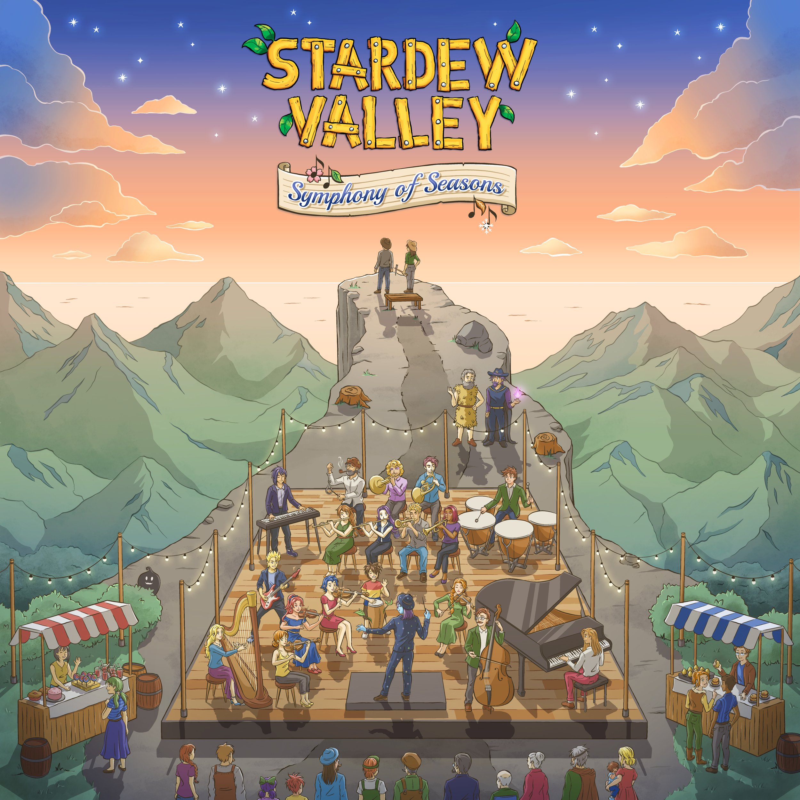

农作物图鉴
农作物图鉴
 节日活动
节日活动
| 关于 | 资源 |
|---|---|

星露谷物语是一个牧场类的RPG游戏。你继承了爷爷在星露谷的农场，但是你手头上只有最基础的农具和少许的金钱，你得靠此开始你的新生活。 你能把这片杂草丛生的田地变成一个繁荣的家园吗？这很不容易，自从JOJA公司来到了小镇，以前的生活都变了。 社区中心，这个曾经是小镇最活跃的地方，如今却是破烂不堪。但山谷里似乎充满了机会，只要你肯努力，就有可能把星露谷变得更繁荣。 |
|
| 新闻公告 | |
|  | |